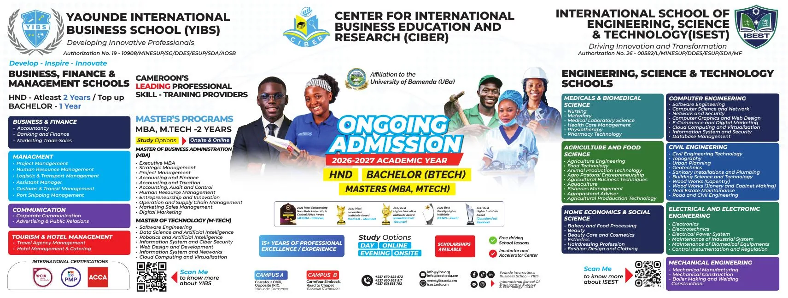

SELECTED WORK / PORTFOLIOMade with purpose.
Made with purpose.
Organised by discipline.
Explore a selection of visual identity, digital communication, advertising and print projects. Each category brings together related work so you can find what matters to you.
4 DESIGN CATEGORIESSCROLL TO EXPLORE ↓
CATEGORY 01
Brand Identity
Visual identities built to give organisations and ideas a recognisable, consistent voice.
17 selected visuals → ↗
↗CATEGORY 02
Social Media Design
Digital communication designed to inform, engage and keep brands visually consistent across social platforms.
12 selected visuals → ↗
↗CATEGORY 03
Advertising & Campaigns
Promotional concepts and campaign visuals that make programmes, events and opportunities easy to understand.
11 selected visuals →
↗CATEGORY 04
Print & Outdoor Design
Physical communication materials designed for visibility, legibility and real-world brand presence.
4 selected visuals →NOT JUST THE FINISHED ARTWORKExplore the thinking
Have a project? Let’s talk ↗Explore the thinking
behind the visuals.
Selected projects include context, creative direction and the visual applications developed for each brief.